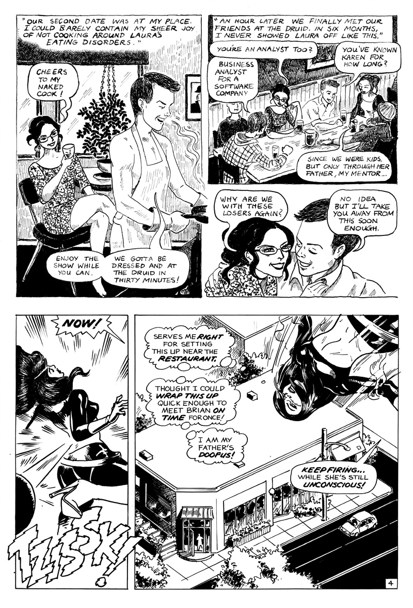
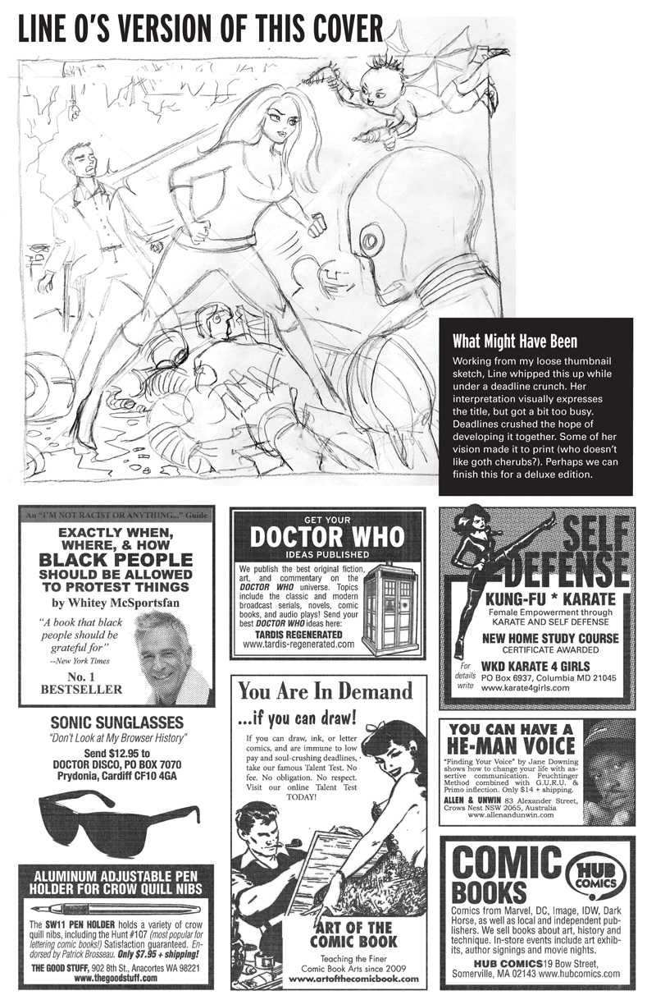

Cupid’s Got A Death Ray!
Agent K tries to relax after rebooting the universe and stopping a General Zaq attack. Why do these vacations never work out? Collaboration with special guest artist Line Olsson.
Inky Stories #6: Outside Front Cover

Inky Stories #6: Inside Front Cover
Cupid’s Got A Death Ray!: Page 1 of 8
Cupid’s Got A Death Ray!: Page 2 of 8
Cupid’s Got A Death Ray!: Page 3 of 8
Cupid’s Got A Death Ray!: Page 4 of 8
Cupid’s Got A Death Ray!: Page 5 of 8
Cupid’s Got A Death Ray!: Page 6 of 8

Cupid’s Got A Death Ray!: Page 7 of 8
Cupid’s Got A Death Ray!: Page 8 of 8
Inky Stories #6: Inside Back Cover
Story Notes
Exploring the comics art form itself, Cupid tells the same story from two characters point of view. It's designed to read horizontally and vertically. Each narrative is told in a different art style. Imagine Alex Toth and Edward Gorey telling the same story. Their storylines merge at the end, like superheroes joining forces after their in-fighting wrecks a city or two.
Not bad for eight pages.
Line Olsson is an illustrator, chalkboard artist and cartoonist. Her of exaggerated, intricate approach to sequential storytelling makes Line a perfect fit for Agent K, who Line describes as "a badass action hero." We "jammed" on this project whenever possible, drawing and inking over each other's work.
Dave M!, blogging from 1369 Coffee House, Inman Square.